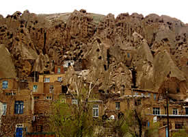
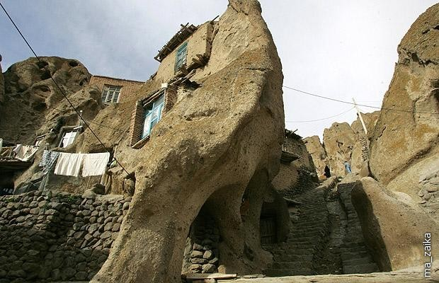
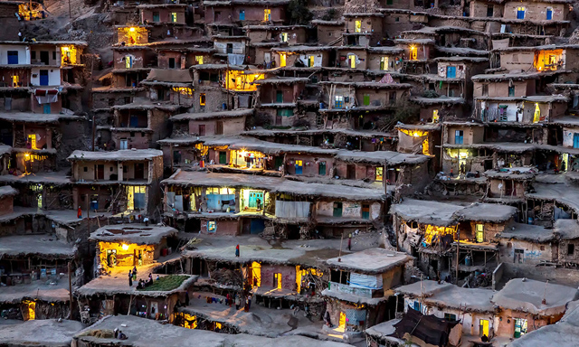
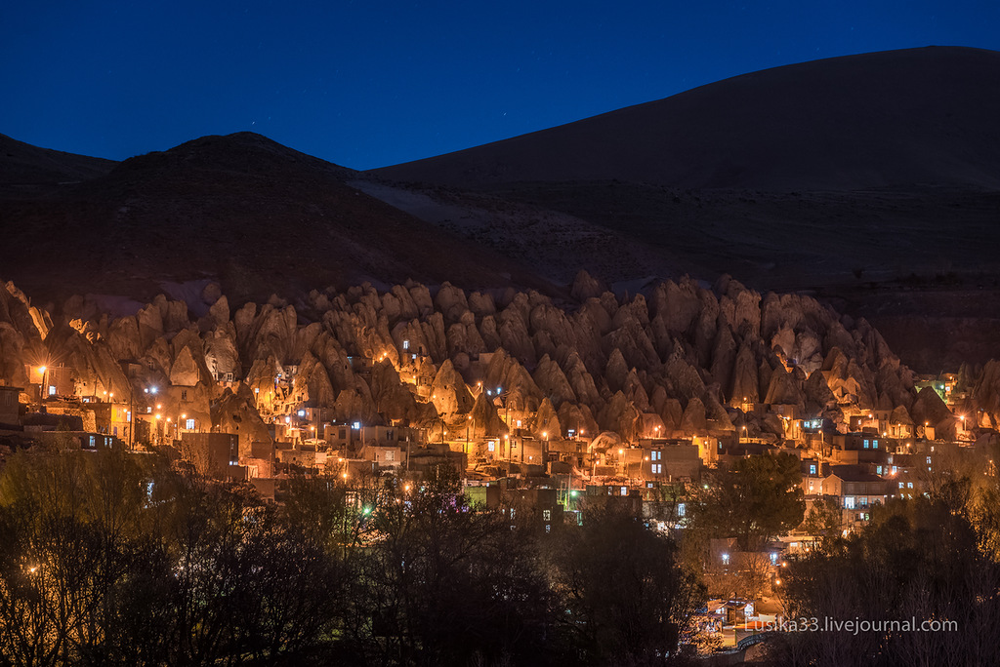

Кандован - унікальне іранське містечко, збудоване в 13-му столітті. Тут печери були прорубані людьми прямо в скелях з вулканічного попелу, що мають форму конусів , тому зовнішній вигляд скельної села більше нагадує скупчення термітників . Оскільки матеріал « будинків» вулканічного походження , то температура в них залишається комфортною круглий рік , а сама первісна форма скель прямо закликала видовбати в них будиночки і жити . Сьогоднішня Кандован обросла і кам'яними будівлями , що примикають до круч , а центр села прикрашає , вирубаний в скелі готель.
Термітник – зразок абсолютно чужої людині архітектури, який став прообразом сотень фантазій на тему підступних розумних комах. Але, виявляється, у подібних будівлях можуть жити не тільки комахи, а й звичайні люди!
Іранське село-”термітник” Кандован, народжене з вулканічного попелу.
Село Кандован (Kandovan) знаходиться на північному заході Ірану, і це відома пам’ятка тутешніх місць. Кам’яні конуси, які роблять містечко схожим на термітник, з’явилися в незапам’ятні часи самі собою, а вірніше – під дією внутрішніх сил Землі.
Збудоване в 13-му столітті. Тут печери були прорубані людьми прямо в скелях з вулканічного попелу, що мають форму конусів, тому зовнішній вигляд скельної села більше нагадує скупчення термітників. Оскільки матеріал «будинків» вулканічного походження, то температура в них залишається комфортною круглий рік, а сама первісна форма скель прямо закликала видовбати в них будиночки і жити.
Місцевим жителям залишилося тільки вселитися в химерні кам’яні стовпчики і печери, і не надто відсвічувати. Справа в тому, що кандованци вважають: їх містечко виник 700 років тому, після поспішної втечі місцевих жителів від монгольської навали. Якщо це так, то все зрозуміло: будинки-”термітники” (або, як їх називають самі кандованци, вулики) – кращий притулок.
А ще будівництво будинків-термітників в печерах не позбавлене сенсу і з сучасної точки зору: у них взимку тепло, а влітку прохолодно завдяки пористій структурі породи. Напевно, тому такі міста будують і в інші країнах – згадати хоча б будинки з каменя в Монсанто.
За сім століть жителі кам’яного міста непогано облаштувалися: термітники обросли прибудовами, комірками, хлівами… Однак свого дивного вигляду місто не втратило. Туристи із задоволенням приїжджають подивитися на Кандован, в тому числі і наші співвітчизники: містечко розташоване недалеко від азербайджанської кордону.
